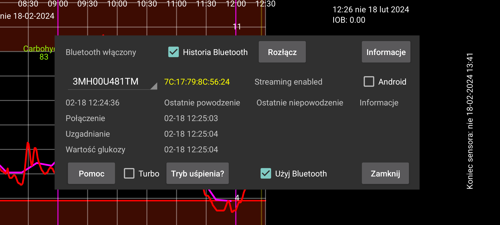

ar be de es fr hi it ja ko nl pl pt ru tr uk uz zh en
Menu rozwijane zawiera nazwę sensora. Jeśli w Juggluco zeskanowano więcej niż jeden sensor na raz, można wybrać, dla którego sensora mają być wyświetlane informacje.
Tryb uśpienia prowadzi do ekranu z informacją, jak wyłączyć optymalizacje baterii dla Juggluco, które mogą uniemożliwić działanie Juggluco.
Historia Bluetooth: W przypadku Libre 2 historia to przeszłe wartości z ostatnich okresów 15-minutowych. Wcześniej były one odbierane tylko poprzez skanowanie. Po włączeniu tej opcji wartości Historii są również odbierane przez Bluetooth. Również inne rzeczy będą działać inaczej. Do Libreview będą wysyłane wartości historii zamiast średnich wartości strumienia. Wadą jest to, że jest to sposób wolniejszy. Może to stanowić problem w przypadku zegarków z systemem WearOS. Ta opcja nie ma wpływu na sensory Libre 3 i US Libre 2; zawsze odbierają one wartości historii przez Bluetooth.
⏰: Pozwól Juggluco korzystać z funkcji budzika, aby zapewnić prawidłowy czas podłączenia do sensorów Dexcom G7 i ONE+. Bez tego, gdy urządzenie znajduje się w głębokim uśpieniu, gdy nie jest używane, czasami nie wybudzi się, aby ponownie połączyć się z sensorem i nie otrzyma natychmiast wartości glukozy. Mój zegarek z WearOS miał ten problem w środku nocy, prawdopodobnie dlatego, że niewiele się ruszałem. Z powodu późniejszego uzupełniania informacji i powolnego wybudzania nie widziałem tego na zegarku i telefonie, tylko w plikach dziennika. Mój telefon nie potrzebuje tego ustawienia i wydaje się działać gorzej, gdy jest włączone.
Uprawnienie: Poprzednie wersje Juggluco wymagały uprawnienia do dostępu do lokalizacji, aby odnaleźć adres sensora. W przypadku używanych przeze mnie sensorów nie jest to już konieczne. Być może są jeszcze sensory, dla których jest to konieczne; w takim przypadku możesz tę opcję włączyć. Po pierwszym kontakcie Juggluco zapisuje adres urządzenia i uprawnienie do dostępu do lokalizacji jest zawsze bezużyteczne. Adres urządzenia, jeśli jest znany, jest wyświetlany po identyfikatorze sensora. Kolor czerwony oznacza sensor podobny do amerykańskiego. Android 12 ma nowe uprawnienie Skanowanie urządzeń w pobliżu, które może być używane zamiast uprawnienia lokalizacji do wyszukiwania adresu urządzenia Bluetooth, ale jest też potrzebne do późniejszego kontaktu z urządzeniami Bluetooth.
Zapomnij: Pozwól Juggluco zapomnieć adres urządzenia i ponownie go zeskanować. W przypadku niektórych sensorów jest to konieczne do uzyskania połączenia,a następnie wykonywane jest automatycznie. Za pomocą tego przycisku można ręcznie nakazać Juggluco wykonanie tej operacji, ponieważ być może są inne okazje, w których jest to również potrzebne.
Rozłącz: zakończ połączenie z tym sensorem przez Bluetooth. Jeśli później chcesz ponownie otrzymywać wartości glukozy z tego sensora, wystarczy, że ponownie go zeskanujesz. Jeśli sensor jest połączony bezpośrednio z zegarkiem, należy najpierw wyłączyć to połączenie bezpośrednie, a następnie nacisnąć Rozłącz na telefonie, a potem Synchr na zegarku.
Turbo: Zwiększa wysiłek włożony w kontakt z sensorem w nadziei, że spowoduje to mniej błędów w połączeniu, ale może zużywać więcej baterii. Wydaje się być potrzebny na Watch4 z czujnikami Freestyle Libre 2, ale nie z czujnikami Freestyle Libre 3 i na żadnym ze smartfonów, na których wypróbowałem tę opcję.
Android: Pozwól, aby to system Android nawiązywał połączenie z sensorem, a nie aplikacja Juggluco. Nie należy używać tej opcji! W większości przypadków nawiązanie połączenia zajmie więcej czasu. Opcja ta została wprowadzona z powodu uszkodzonej wersji Androida 13, która została później naprawiona. Należy ją włączyć tylko wtedy, gdy na ekranie Sensor nie są wyświetlane żadne ostatnie czasy. Oznacza to, że nie są wyświetlane żadne błędy połączenia ani błędy sensora, ale także nie są odbierane żadne wartości i można przywrócić działanie, wyłączając i włączając Bluetooth. Przy próbie połączenia europejskiego czujnika Libre 2 z dwiema aplikacjami na tym samym telefonie jednocześnie (jest to możliwe tylko wtedy), również może dojść do takiego stanu.
Informacje: Podaje czas rozpoczęcia i zakończenia oraz czas ostatniego skanowania i strumienia z sensora.
Aby połączyć się z sensorem Freestyle Libre 2 za pośrednictwem „Bluetooth Low Energy”, Bluetooth powinien być włączony. Zanim sensor zostanie pomyślnie zeskanowany przez tę aplikację, nic się nie stanie. Sensora nie należy łączyć z czytnikiem FreeStyle ani innymi aplikacjami na smartfonach. Alarmy w aplikacji Abbott Librelink powinny być wyłączone lub cała aplikacja powinna być zatrzymana. Zdaje się, że niektóre aplikacje Librelink kontaktują się z sensorem, gdy alarmy są wyłączone, i mogą powodować problemy z połączeniem, więc dla pewności użyj "Wymuś zamknięcie" . Jeśli aktywowałeś sensor za pomocą czytnika Freestyle i nie możesz go wyłączyć, możesz zapobiec jego kontaktowi z sensorem, umieszczając czytnik w klatce Faradaya.
Opcja Użyj Bluetooth powinna być włączona.
Jeśli powyższe warunki są spełnione, nadal może upłynąć dużo czasu, zanim aplikacja otrzyma wartości glukozy z sensora. Często trwa to minutę, ale innym razem znacznie dłużej. Etap połączenia sprawia najwięcej trudności. Najczęściej zdarzają się niepowodzenia ze statusem=133, który jest argumentem statusowym funkcji onConnectionStateChange(BluetoothGatt bluetoothGatt, int status, int newState). Oznacza to, że nie znaleziono urządzenia Bluetooth. Prawie zawsze znalezienie urządzenia zajmuje tylko chwilę. Możliwe jest również, że sensor podłączony jest do innego urządzenia, chwilowo nie działa dobrze, inne urządzenia zakłócają połączenie lub Bluetooth systemu Android nie działa. Czasami pomaga wyłączenie i włączenie Bluetooth lub ponowne uruchomienie telefonu albo wyłączenie połączenia Bluetooth innych urządzeń. Inne problemy czasami można rozwiązać przez zeskanowanie sensora. Woda (w tym woda w organizmie) stojąca na drodze sygnału może stanowić problem, więc noszenie zegarka WearOS na innej ręce niż na tej, na której przyklejony jest sensor, może powodować problemy z połączeniem, gdy ręce trzyma się w taki sposób, że ciało znajduje się między zegarkiem a sensorem.
Skanowanie sensora za pomocą Juggluco (z włączoną opcją Użyj Bluetooth) na innym telefonie, spowoduje kradzież połączenia z tego telefonu i może zająć trochę czasu, ze skanowaniem w międzyczasie, aby odzyskać je z powrotem.